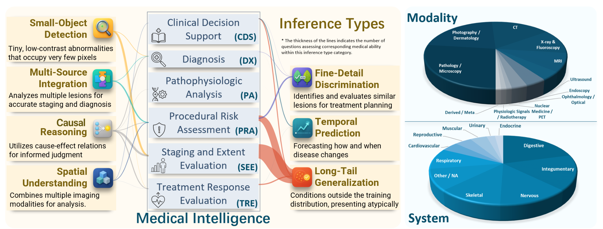
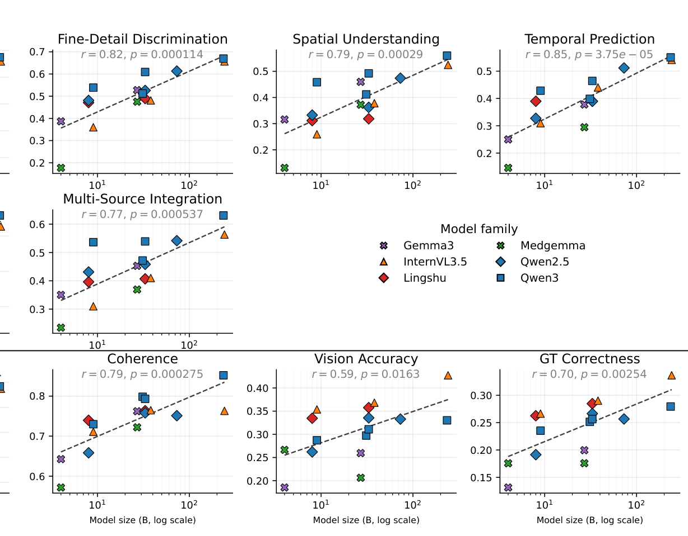

Med-CMR 深读：把“医学多模态推理”从一个总分拆成七维，到底拆出了什么医学大模型还做不到的事？
导读。多模态大模型（MLLM）正在挤进临床工作流，但现有医学评测多停在“描述图像 / 取一个显而易见的事实”这种感知级 VQA 上，把“会不会做复杂临床推理”整个藏了起来。Med-CMR 的立题很具体：当你不再用一个总分、而是把“医学多模态推理”拆成可单独诊断的七个能力维度，今天最强的模型到底卡在哪一维？它把复杂度分成三个视觉维度（小目标检测、细节判别、空间理解）+ 四个推理维度（时序预测、因果推理、长尾泛化、多源整合），用真实期刊病例报告（JMCR / NEJM 等）造出 20,653 道题（16,655 道五选一 MCQ + 3,998 道开放题），横跨 11 个身体系统、12 种成像模态，并经“专家 + 模型”两阶段审查。在 18 个 SOTA 模型上跑下来，结论扎得很紧：GPT-5 总分最高（MCQ 57.81 / 开放题 48.70），但专门微调的医学模型并不稳定优于通用大模型，而长尾泛化是所有模型一致最难、得分最低的维度。换句话说，Med-CMR 不是又一个排行榜，而是一台把“整合视觉证据 + 临床逻辑”的能力短板照出来的应力测试机。

1. 核心问题：一个总分，为什么量不出“会不会做临床推理”？
论文开篇把现状说得很直白：现有医学多模态基准绝大多数停在感知级 VQA——模型描述一张图，或从一小段上下文里取一个明显的事实。这种设定恰好把临床里真正难的部分遮住了：微小低对比病灶、跨模态比较、随时间的演变、把症状-影像-结局串起来的因果链、教科书里都罕见的长尾分布。于是今天的排行榜对“复杂临床推理”几乎是盲的。
作者据此提出：要把这种能力量出来，缺的是三样东西——
- 系统的能力分解。不该把“医学多模态推理”当成一个分数，而要先把“细粒度视觉理解”和“下游推理”分开，再各自拆成临床上有意义的子维度。
- 临床对齐且刻意难的任务。题目要建立在真实病例上，并显式瞄准时序预测、因果推理、长尾泛化、多源整合这些难设定。
- 覆盖广而经过策划的数据。跨器官、跨模态、跨疾病过程，且有专家审查保证题目真实、可临床解读。
问：把一个总分拆成七维，听起来像“多报几个指标”。这跟“堆指标”有什么本质区别？为什么说它是实验设计而不是装饰？
引导：盯住“一个标量能携带多少诊断信息”。一个总分把模型的能力压成一维——一个“感知强、因果弱”的模型和一个“感知弱、因果强”的模型可能拿到同样的总分，于是从分数上完全分不开。要定位短板，就必须让每个维度只受一种能力支配。
答：这是一次控制变量式的设计，可以从两条独立路径看出它的必要性。
路径 A（信息角度，自上而下）：真实的“能力”是一个多维向量（七个轴各有强弱）。用一个总分汇报，等于把这个向量投影到一维——投影必然丢掉维度间的可分辨信息，两个能力画像迥异的模型可以落到同一个总分上。把七维分开报告，就是不做这次有损投影，让“强在哪、弱在哪”重新可读。
路径 B（实验角度，自下而上）：这套分解直接兑现成了一个本来看不见的结论——“长尾泛化是所有模型一致最难的维度”。这个判断只有在维度被拆开、每维单独计分时才浮得出来；若只报总分，长尾的塌陷会被其它维度的高分平均掉、彻底隐形。一个分解能让新结论显形，就证明它携带了总分没有的信息，而非冗余的指标堆叠。
Takeaway：七维不是“多报指标”，是把“能力”这个多维向量从一次有损的“总分投影”里救回来——每一维只受一种能力支配，失败才可被诊断、可被定位。
2. 贡献拆解：作者明确提出了什么？
作者明确提出的贡献（论文 §2 末“three-fold”）：
- Med-CMR：首个对临床复杂推理做细粒度评测的基准。把推理分解成七个任务，各自对应一种独立的医学复杂度来源，给出结构化、临床落地的能力评估。
- 统一的双轨评测协议。MCQ 量“事实正确性”，开放题量“推理与生成质量”——后者由一个外部、标准对齐的 LLM 沿一致性 / 连贯性 / 视觉准确性 / 真值正确性四维打分，给出“答案对不对 + 推理好不好”的整体视图。
- 18 个模型的系统评测 + 误差/消融分析。含医学专用与通用 MLLM，并明确给出“医学微调模型在复杂临床推理上并不稳定优于通用模型”这一反直觉发现，及其失败模式。
读数提醒：这是一篇“基准 + 诊断”论文，不是“新模型”论文
Med-CMR 没有提出新模型、没有训练，它产出的是一套题目 + 协议 + 对 18 个现成模型的诊断。因此本页的 #pipeline 指的是基准构建流水线（采图→出题→造干扰项→过滤→质检），#method 指的是能力分解的定义 + 开放题打分公式，而 #training 一节按惯例标注“不适用（无训练）”，转而记录评测的算力姿态。
读者能进一步推断的是：这篇真正推进的单一变量是“评测的粒度”——从“一个总分”升级到“七维 + 双轨”。它的价值不在某个模型分数，而在于把“医学微调到底买到了什么、又赔掉了什么”这个长期含糊的问题，第一次摆到了可分维、可对照的台面上。
3. 数据：20,653 道题，源自真实病例，11 系统 × 12 模态
Med-CMR 不造合成图，而是从 JMCR、NEJM 等权威生物医学期刊的真实病例报告与研究论文里采集影像，连同人类标注的图注与元数据一起取下，再据此构造题目。最终规模：
- 总量 20,653 道 VQA：16,655 道五选一 MCQ + 3,998 道开放题。
- 七个一级类目（即七维），每个类目下再分 5 个子类型，做更细粒度的题型分类。
- 覆盖 11 个身体系统、12 种成像模态：身体系统分类按 Liachovitzky 的标准；成像模态分类遵循 DICOM 与 RSNA RadLex Playbook，并扩展到放射学之外（病理、眼科、内镜等）。
{kind=link}

3.1 七维到底各测什么
论文 §2.1 把七维逐条定义清楚，前三维属“视觉复杂度”、后四维属“推理复杂度”：
| 维度（缩写） | 侧 | 测的是什么 |
|---|---|---|
| 小目标检测 SOD | 视觉 | 识别微小、低对比、难以察觉的目标 |
| 细节判别 FDD | 视觉 | 区分“看着像、临床含义却不同”的相似发现 |
| 空间理解 SU | 视觉 | 整合并对齐多模态信息以维持空间一致性 |
| 时序预测 TP | 推理 | 对疾病随时间的进展与预后做推断 |
| 因果推理 CR | 推理 | 用多步因果链把症状、发现、结局串起来 |
| 长尾泛化 LTG | 推理 | 样本极少的罕见病例下的决策 |
| 多源整合 MSI | 推理 | 从多个并存异常中抽取关键诊断线索 |
问：“源自真实病例报告 + 人工图注”跟“强视觉依赖”有什么关系？这是数据来源的工程选择，还是基准有效性的机制必需？
答：是机制必需。一个评“视觉推理”的基准，最怕的是题目不看图也能蒙对（靠文本先验或常识）。论文用两道闸把这件事顶住：(1) 出题用 GPT-5-mini 从人类标注的图注里抽正确答案、按模板生成，保证答案确实来自这张图的临床事实而非凭空；(2) 造干扰项时显式要求“视觉依赖”——题目必须依赖对视觉信息的解读、而非仅靠文本即可作答。真实病例报告之所以关键，是因为它自带“图-注”配对的临床事实，比合成图更能撑起“答案锚在影像上”这个前提。
Takeaway：用真实病例 + 人工图注，不是为了“看起来权威”，而是为了让每道题的答案真的锚在影像证据上——否则七维量出来的就不是视觉推理，而是语言先验。
4. 基准构建流水线：采图 → 出题 → 造干扰项 → 双重过滤 → 质检
Med-CMR 的“pipeline”不是模型前向，而是一条把原始病例报告变成可信题库的数据流水线（论文 §2.2）。每一步都在回答“怎么让题既难、又对、又非看图不可”。
4.1 维度引导的数据采集
先按七维去权威期刊（JMCR / NEJM 等）采集影像 + 人工图注 + 元数据，据此构造七个题型类目，保证临床锚定与多样性。
4.2 出题（半自动）
请有医学背景的标注者为每个类目设计 10–20 个模板，每个模板都要求“强视觉锚定 + 对应该维度的能力 + 鼓励超出直接识别的多步诊断推断”。再用 GPT-5-mini-2025-08-07 辅助：对每张图，模型选一个合适模板、从对应人工图注里抽出正确答案。这一步保证生成的题“正确、多样、且聚焦目标推理类型”。
4.3 干扰项标注（人在环）
MCQ 的难度主要由干扰项决定。用 GPT-5-Mini / Qwen3-VL-Plus / Claude-Sonnet-4 三个大模型各生成 4 个干扰项候选，凑成 12 个候选池，再由三名医学背景标注者选出 4 个最终干扰项，且必须同时满足四条：(1) 足够难——对备考充分者仍有挑战；(2) 排除正确性——干扰项必为假、且不与正确答案语义重叠；(3) 视觉依赖——必须依赖看图、而非仅靠文本；(4) 临床合理——每个选项都现实、符合语境。
4.4 双重过滤 + 质检
过滤分模型侧与人工侧：
- 人工过滤（出题前）：医护人员先人工审所有图，剔除图注不足、或与目标维度不匹配的图。
- 模型过滤（出题后）：用 Lingshu-7B、Qwen2.5-VL-7B、Llava-Med-v1.5-Mistral-7B 三个模型作答，三个都答对的题被剔除——保证留下的题对 MLLM 有适当难度。
- 质量保证：全科医生重点过滤 LLM 生成内容，最终从原始合成集里剔除约 8% 的可疑内容；人在环阶段两名标注者联合复审、独立审计员校验判断一致性、未达共识的题剔除；模型过滤之后再由四名标注者确认每题有唯一无歧义的正确答案（有其它可能正确选项的整题删除）；最后由持照医师做整体医学准确性复核。
为什么“三模型都答对就删”这一步是流水线的关键阀门？
这一步把基准的难度下限钉死了。若不剔除“小模型都会”的题，题库会被大量感知级简单题稀释，七维分数就退化回“谁刷分多”而非“谁能做复杂推理”——正是 §1 批评现有基准的那个毛病。用三个 7B 量级模型当“地板探测器”，等于显式声明：留下的题，至少不是现成小模型一眼能蒙对的。它和“人工先删劣质图”一前一后，把难度从数据源和题面两头同时抬起来。
5. 方法：能力分解的定义 + 开放题的四维加权打分
Med-CMR 的“方法”核心有两块：一是 §2.1 把复杂度拆成七维的定义体系（已在 #datasets 表中给出），二是开放题的评分公式——这条公式的权重选择本身就是一个被精心设计的实验决定。
5.1 双轨评测：MCQ 量正确性，开放题量推理质量
MCQ 直接按正确率计分。开放题不能只看“最后答案对不对”，因为它还要量“推理过程好不好、有没有真的看图”。论文用一个四维加权和给开放题打分（§2.4）：
四维各测一面：一致性（Consistency）=表述清晰、内部不自相矛盾；连贯性（Coherence）=推理各步之间的因果连接；视觉准确性（Visual accuracy）=对图中视觉特征的识别与描述是否准确；真值正确性（Ground-truth correctness）=最终答案与标准答案是否一致。打分由独立评委 DeepSeek-V3.2-Exp 在受控协议下完成（用一个不在被测列表里的模型当评委，减少对被测模型的偏向），所有开放题分归一化到 0–100。
问：为什么把 Visual accuracy / GT correctness 的权重设成 Consistency / Coherence 的四倍？这个 4:1 不是拍脑袋，它背后的假设是什么？
引导：一个打分维度有没有用，要看它还能不能把模型区分开。如果几乎所有模型在某一维上都接近满分，那这一维就饱和了、没有判别力，给它高权重只会稀释总分里真正有信息的部分。
答：4:1 是把分数的方差，压到“还能区分模型”的那两条轴上。这个判断可以从两条独立路径验证。
路径 A（判别力 / 饱和度，自上而下）：隐含假设是“一致性、连贯性属于语言流畅度，对今天的大模型已基本是已解决问题（接近天花板），而视觉准确性、真值正确性才是临床真正的目标、且远未解决”。一个评分维度的价值正比于它的判别力≈跨模型的方差；饱和维度方差小、判别力低。把目标维度加权到 4 倍，等于让总分主要由“还分得开模型”的轴决定。
路径 B（用本文数据反推，自下而上）：表 2 的开放题四列恰好坐实了这个假设——很多模型 Consistency 接近天花板（多数 90+，GPT-5 97.77、Gemini 98.11），Coherence 也普遍很强（Qwen3-VL-30B-A3B 高达 79.84），却同时在 Visual accuracy / GT correctness 上普遍低于 30~40（Qwen3-VL-30B-A3B 两项都 <30）。也就是说：低权重的两维已经饱和、几乎人人拿高分，高权重的两维才把模型拉开档次。如果四维等权，开放题总分会被两列“人人高分”的维度顶起来、彼此趋同，反而看不出谁强；4:1 让总分跟着没饱和、有判别力的两维走。两条路径殊途同归：权重该压在“尚未解决、还能区分”的能力上，而不是均摊给已经解决的流畅度。
Takeaway：4:1 不是偏好，是判别力的再分配——把开放题总分的方差从“已饱和的流畅度”移到“未解决的视觉接地与正确性”上，这恰好是临床真正在意的两件事。
5.2 临床智能映射：七维之外的第二张投影
除七维外，论文还把题目映射到六类临床智能能力（图 2 左 / 表 3）：临床决策支持 CDS、诊断 DX、病理生理分析 PA、操作风险评估 PRA、分期与范围评估 SEE、治疗反应评估 TRE。这是对同一题库的另一种切法——七维是“按推理/感知复杂度来源”切，临床智能是“按临床任务类型”切。两套投影互相印证：无论沿哪条轴看，DX（诊断）这种要求精确视觉接地的任务，都是各模型相对薄弱的一档。
6. 评测配置：无训练，靠 vLLM 推理 + 独立 LLM 评委
Med-CMR 是纯评测基准，本身不训练任何模型，所以传统意义的“训练账本（优化器 / LR / GPU-hours）”在这里不适用。论文记录的是评测侧设置（§3.1）：
- 被测模型 18 个：闭源 GPT-5、Gemini-2.5-Pro；开源含 Gemma3-4B/27B、Medgemma-4B/27B、Qwen2.5-VL-7B/32B/72B、InternVL3.5-8B/38B/241B-A28B、Lingshu-7B/32B、Qwen3-VL-8B/32B/30B-A3B/235B-A22B。
- 部署：开源模型用 vLLM 本地推理，闭源模型走官方 API。
- 答案抽取：设计 prompt 模板约束输出格式，再用正则匹配抽答案（完整 prompt 见附录）。
- 开放题评委：DeepSeek-V3.2-Exp 作为独立外部评委按式 1 打分；评委不在被测列表内，以降低对被测模型的偏向。
关于算力（粗估，不等同账单）
论文未披露评测的总 GPU 卡数与墙钟时间，仅说明开源模型用 vLLM 推理、闭源走 API。考虑被测模型最大到 235B（且含 241B-A28B MoE），加上 20,653 道题 × 18 个模型的一轮全量推理 + 开放题逐条 LLM 评分，整体推理量不小，但论文未给出可据以估算的数字，此处不做 GPU-hours 估算，以免给出连“按论文披露数字粗略估算”都无从依据的数字。
7. 实验：18 个模型，两张主表把短板照出来
判断：主结果（表 2）测“七维 × 双轨”的总体格局，临床智能表（表 3）从第二条轴交叉验证，图 3 看“规模到底买到了什么”。逐一看。
7.1 主表：GPT-5 居首，但医学微调不占优、长尾全场最难
表 2 是全文最重的一张表。MCQ 侧闭源明显领先：GPT-5 总分 57.81、每个子类目都第一；Gemini-2.5-Pro 总分 49.87 居次。开源最强是 Qwen3-VL-235B-A22B（49.34），与 GPT-5 仍差 8.47 分。长尾泛化（LTG）一致最难：最高分仅 55.19（GPT-5），所有开源模型都 <46。同尺寸下，医学微调的 Medgemma / Lingshu 系并未显出优势。
| 模型 | SOD | FDD | SU | TP | CR | LTG | MSI | MCQ All | Con | Coh | VA | GT | 开放 All |
|---|---|---|---|---|---|---|---|---|---|---|---|---|---|
| 闭源模型 | |||||||||||||
| GPT-5 | 66.08 | 71.45 | 62.06 | 58.33 | 60.30 | 55.19 | 69.00 | 57.81 | 97.77 | 88.86 | 40.45 | 34.65 | 48.70 |
| Gemini-2.5-Pro | 58.75 | 68.07 | 56.70 | 52.08 | 53.54 | 46.42 | 64.42 | 49.87 | 98.11 | 89.36 | 35.77 | 32.07 | 45.98 |
| 开源模型 1B~10B | |||||||||||||
| Medgemma-4B | 16.13 | 17.72 | 13.12 | 14.58 | 17.64 | 14.00 | 23.45 | 14.90 | 86.98 | 57.17 | 26.65 | 17.57 | 32.10 |
| Lingshu-7B | 32.84 | 47.12 | 31.17 | 38.99 | 31.53 | 23.86 | 39.62 | 27.26 | 96.19 | 73.96 | 33.47 | 26.26 | 40.91 |
| Gemma3-4B | 31.57 | 38.68 | 31.59 | 25.00 | 28.10 | 23.74 | 35.04 | 25.98 | 90.05 | 64.26 | 18.53 | 13.14 | 28.10 |
| Qwen2.5-VL-7B | 37.83 | 48.10 | 33.29 | 32.74 | 35.22 | 28.15 | 43.13 | 31.06 | 92.35 | 65.83 | 26.21 | 19.15 | 33.96 |
| InternVL3.5-8B | 29.52 | 36.01 | 25.95 | 30.95 | 29.71 | 21.53 | 31.00 | 24.17 | 95.20 | 71.10 | 35.38 | 26.65 | 41.44 |
| Qwen3-VL-8B | 46.63 | 53.87 | 45.84 | 42.86 | 43.50 | 34.48 | 53.64 | 38.18 | 88.46 | 72.99 | 28.72 | 23.54 | 37.05 |
| 开源模型 10B~100B | |||||||||||||
| Medgemma-27B | 37.44 | 47.54 | 37.24 | 29.46 | 30.80 | 25.92 | 36.93 | 28.91 | 89.82 | 72.21 | 20.64 | 17.58 | 31.49 |
| Lingshu-32B | 37.83 | 48.95 | 31.88 | 38.99 | 36.21 | 27.08 | 40.70 | 30.47 | 96.89 | 76.36 | 35.76 | 28.48 | 43.02 |
| Gemma3-27B | 45.94 | 52.74 | 45.98 | 37.80 | 42.35 | 33.62 | 45.28 | 37.07 | 93.72 | 76.23 | 25.96 | 19.96 | 35.36 |
| Qwen2.5-VL-32B | 42.82 | 52.60 | 36.25 | 38.99 | 39.39 | 29.60 | 45.82 | 33.36 | 95.54 | 75.81 | 33.55 | 26.66 | 41.22 |
| Qwen2.5-VL-72B | 52.10 | 61.32 | 47.39 | 51.19 | 46.36 | 38.46 | 54.18 | 42.17 | 96.31 | 75.11 | 33.29 | 25.68 | 40.73 |
| InternVL3.5-38B | 42.13 | 48.10 | 37.80 | 44.05 | 38.35 | 32.48 | 40.97 | 35.07 | 97.20 | 76.48 | 36.83 | 29.03 | 43.71 |
| Qwen3-VL-30B-A3B | 44.57 | 51.20 | 41.18 | 39.88 | 38.14 | 32.86 | 47.17 | 35.79 | 94.37 | 79.84 | 29.73 | 25.15 | 39.37 |
| Qwen3-VL-32B | 49.66 | 60.90 | 49.22 | 46.43 | 47.45 | 41.58 | 53.91 | 44.28 | 96.00 | 79.31 | 31.09 | 25.65 | 39.37 |
| 开源模型 >100B | |||||||||||||
| InternVL3.5-241B-A28B | 55.91 | 65.68 | 52.47 | 54.17 | 48.80 | 42.73 | 56.33 | 46.17 | 96.87 | 76.33 | 42.74 | 33.66 | 47.88 |
| Qwen3-VL-235B-A22B | 57.48 | 66.95 | 55.99 | 55.06 | 53.33 | 45.86 | 63.07 | 49.34 | 97.10 | 85.21 | 33.02 | 27.95 | 42.62 |
这张表里有两处反直觉、又最值得记的细节：
- 开放题 All 与 MCQ All 排序不一致。例如 InternVL3.5-8B 的 MCQ All 仅 24.17（组内不高），开放题 All 却到 41.44（组内最高）；Qwen3-VL-8B 反过来——MCQ 组内第一（38.18）、开放题却只 37.05。原因正是式 1 的 4:1 权重：开放题分由“视觉准确性 + 真值正确性”主导，与“能否在五选一里排掉干扰项”是两种不同能力。
- “流畅度饱和、视觉接地塌陷”普遍存在。几乎所有模型 Consistency 90+ / Coherence 70~89，但 VA / GT 普遍 <40——这正是 §5.1 给 VA/GT 加权 4 倍的实证依据：流畅度这条轴已经分不开模型了。
7.2 临床智能表：第二条轴上，诊断（DX）一致偏弱
表 3 把同一题库按六类临床智能重切。这张表要支撑的结论是“无论沿哪条轴看，要求精确视觉接地的任务都最弱”——所有模型的 DX（诊断）列普遍低于其它列，与七维里 SU/MSI 偏弱一致，互为佐证。
| 模型 | CDS | DX | PA | PRA | SEE | TRE |
|---|---|---|---|---|---|---|
| GPT-5 | 65.42 | 53.44 | 63.66 | 61.11 | 64.61 | 57.39 |
| Gemini-2.5-Pro | 54.47 | 45.85 | 55.53 | 56.94 | 59.07 | 48.20 |
| Medgemma-4B | 19.25 | 13.39 | 15.81 | 22.22 | 22.91 | 12.80 |
| Lingshu-7B | 32.21 | 22.93 | 31.74 | 36.11 | 37.45 | 34.16 |
| Gemma3-4B | 29.93 | 22.74 | 30.14 | 38.89 | 37.58 | 21.74 |
| Qwen2.5-VL-7B | 38.14 | 27.06 | 35.56 | 38.89 | 41.06 | 31.43 |
| InternVL3.5-8B | 32.39 | 21.23 | 26.24 | 31.94 | 33.98 | 24.97 |
| Qwen3-VL-8B | 46.53 | 33.16 | 44.23 | 45.83 | 48.78 | 39.13 |
| Medgemma-27B | 34.85 | 24.24 | 35.26 | 31.94 | 41.31 | 26.21 |
| Lingshu-32B | 38.59 | 26.92 | 33.37 | 40.28 | 41.83 | 32.05 |
| Gemma3-27B | 43.80 | 32.72 | 42.58 | 48.61 | 49.94 | 33.17 |
| Qwen2.5-VL-32B | 42.34 | 28.84 | 37.92 | 47.22 | 46.33 | 33.29 |
| Qwen2.5-VL-72B | 52.28 | 37.09 | 48.07 | 50.00 | 51.87 | 43.23 |
| InternVL3.5-38B | 43.25 | 31.76 | 37.51 | 33.33 | 44.79 | 38.88 |
| Qwen3-VL-30B-A3B | 42.70 | 32.31 | 39.68 | 41.67 | 46.33 | 33.54 |
| Qwen3-VL-32B | 50.91 | 40.33 | 49.54 | 52.78 | 53.93 | 40.62 |
| InternVL3.5-241B-A28B | 56.11 | 41.26 | 50.93 | 47.22 | 57.40 | 51.06 |
| Qwen3-VL-235B-A22B | 58.21 | 44.62 | 54.44 | 59.72 | 59.07 | 52.17 |
7.3 规模相关性：放大模型买到了什么？
图 3 把每个分项分数对模型尺寸（log B）做相关分析。结论分裂得很干净：MCQ 侧，规模在所有类目上一致提升正确率（七维相关 $r=0.77\sim0.85$，全 $p<0.001$）——更大的模型在模式识别、多模态整合、临床知识检索上确有更强容量；但开放题侧，规模的红利集中在语言质量：Coherence 相关较高（$r=0.79$），而 Visual accuracy 相关最弱（$r=0.59$）、GT correctness 也只 $r=0.70$。
{kind=link}

问：MCQ 一致随规模涨、开放题的视觉准确性却几乎不随规模涨——这两件事矛盾吗？
答：不矛盾，它们指向同一个解释。MCQ 是“在五个选项里挑一个”，规模带来的更强的模式识别 + 知识检索，能直接把胜率抬上去——哪怕模型没真正“看准”，靠知识先验排掉几个干扰项也能蒙对更多。开放题的视觉准确性却要求主动、准确地描述图里的视觉证据，这是一种更硬的接地能力，不能靠语言先验绕过。所以规模买到了“选择题里的命中率”和“语言上的连贯”，却买不到“看准图”——后者正是 §8.1 误差分析里“识别类错误占最大头”的根因。
Takeaway：规模是“感知 + 知识检索 + 语言流畅”的有效杠杆，却撬不动“视觉接地”这块硬骨头——这正是 Med-CMR 想用 VA/GT 高权重照出来的那条短板。
8. 误差与对照分析：分解出的短板，能否解释结果？
一个好的分解，应该能让“为什么差”也可被诊断。论文 §4 的三组分析正是在验证这件事。
8.1 GPT-5 误差画像：识别错误占最大头
对上限模型 GPT-5，按七维各采样误差、人工归入五类（识别 / 推理 / 医学知识 / 题意误解 / 格式）。主导误差是图像识别、推理、医学知识不足三类，题意误解与格式问题罕见。三条观察：
- 观察 1：识别类错误在“视觉吃重”的维度里占比最大。GPT-5 常盯整体外观、忽略对推理至关重要的细节，于是漏掉小特征、混淆重叠结构、跨切片追踪不一致——最常见于小目标检测、多源整合、细节判别、空间理解。作者据此推断：当前视觉编码器缺乏稳健的多尺度特征与跨帧一致性，让模型依赖粗糙的全局线索而非局部证据。
- 观察 2：推理失败多源于“无法跨视图/时间/上下文连接证据”。模型常聚焦局部信息、形成有偏推理路径，即便部分观察正确也得出错误结论——在空间理解、多源整合、时序预测、因果推理上最明显。
- 观察 3：最先进的模型仍卡在“需要专科医学知识”的题上。最明显于时序预测、因果推理、长尾泛化——答案取决于对疾病机制和罕见情形的理解，而模型训练里少见。
8.2 医学微调到底买到了什么、又赔掉了什么？
这是全文最有价值的对照实验（图 4b/c）。现象一致：所有医学微调模型在 MCQ 上相对其基座下降，在开放题上差距缩小、个别甚至反超。论文做了定向误差分析：取 150 道“Qwen2.5-VL-32B 对、Lingshu-32B 错”的 MCQ、150 道“Gemma-27B 对、Med-Gemma-27B 错”的 MCQ，再取 50 道“Lingshu-32B 开放题分高于 Qwen2.5-VL-32B”的题，人工复核。
问：同一个微调，为什么在 MCQ 上掉点、却在开放题上反超？用“训练分布 vs 评测分布”解释。
引导：医学 SFT 把输出分布收窄到“典型疾病模式 + 规范化医学措辞”上。这种收窄对“答案靠不靠医学语义”有利，对“要不要抠出图里细微视觉差别”不利——而 MCQ 和开放题恰好分别考这两件事。
答：分两边看。
MCQ 端（分布收窄 → 掉点）：论文识别出两种医学模型的 MCQ 错误模式——(1) 走对了诊断大方向，却忽略细微视觉线索而选错；(2) 依赖模式匹配，把几个显著特征直接连到典型诊断、不整合其它上下文。两者都说明医学微调让模型更依赖领域内的关联模式、更少做跨模态证据整合——而 Med-CMR 的 MCQ 干扰项是专门设计来惩罚“只靠原型匹配、不抠细节”的，于是评测分布与“被收窄的训练分布”错位，掉点。
开放题端（语义对齐 → 反超）：开放题部分由“医学语义是否贴合”计分。医学模型即便漏了细粒度细节，也更可能生成“匹配整体视觉语义 / 合理诊断描述”的文本——这正落在它被微调收窄到的那块分布里，于是开放题差距缩小甚至反超。同一次分布收窄，在“考细节辨别”的 MCQ 上是负债、在“考医学措辞贴合”的开放题上是资产。
反例诚实标注：Medgemma-27B 是例外——它开放题四维全线下滑，反映其通用推理能力退化得更严重，说明“微调收窄”并非总能在开放题上变现。
Takeaway：医学微调买到的是“领域语义对齐”、赔掉的是“通用多模态推理与细节辨别”。它在评测分布偏语义的开放题上是资产、在偏细节的 MCQ 上是负债——这解释了“医学模型不稳定优于通用模型”这一全文核心反直觉发现。
为佐证，论文把 500 道“原本偏向通用模型”的 MCQ 改写成开放题重测（图 4c）：Lingshu-32B 改写后开放题分高于其基座，Medgemma-27B 仍低于 Gemma-27B——再次印证“收窄能否变现，取决于评测分布偏不偏语义，且并非对所有医学模型都成立”。
8.3 LLM 评委可信吗？
开放题用 DeepSeek-V3.2-Exp 当评委，论文做了人-机对齐验证（§4.3，图 4d）：随机取 200 道开放题，三个代表模型（Qwen3-8B / Qwen3-32B / MedGemma-27B）的回答由两名标注者按同一准则独立排名、再调和；按胜率（赢/平/负=1/0.5/0）聚合，并算人-机排名的 Spearman $\rho$。结果：各维度胜率最大差异仅 0.0449（出现在 MedGemma-27B 的连贯性维度）；一致性、视觉准确性的 $\rho>0.8$，连贯性、真值正确性的 $\rho>0.78$。结论：自动评测可作为专家评分的可靠替代。
9. 局限、失败模式与复现门槛
- 题目源于已发表病例报告，存在“被预训练见过”的污染风险。JMCR / NEJM 等公开期刊文本很可能进入过被测模型的预训练语料；论文用“强视觉依赖 + 三模型都对就删”来压低纯文本可蒙对的题，但无法完全排除知识泄漏，长尾/罕见题尤甚。
- 出题与干扰项重度依赖大模型（GPT-5-mini / Claude / Qwen 等）。题目正确性最终靠人工 + 持照医师复核兜底（剔除约 8% 可疑内容），但“用模型造、再用模型筛”的链条本身可能带入系统性偏好——例如干扰项风格偏向某些模型的盲区。
- 开放题评委也是 LLM（DeepSeek-V3.2-Exp）。尽管人-机对齐 $\rho>0.78$ 较强，LLM-as-Judge 仍可能对“措辞华丽但视觉错误”的回答给偏高分；4:1 权重缓解了这一点，但未根除。
- “无像素级视觉接地核验”。基准用 MCQ/开放题间接量视觉接地，并不提供病灶级 mask/bbox 监督，因此“视觉准确性低”是从答案与图注一致性反推的，而非像素级核验。
- 覆盖虽广，但各模态/系统题量分布不均（图 2 饼图）。少数模态/系统占比较小，细分到“某模态 × 某维度”时样本可能偏少，单格分数的方差需谨慎解读。
- 失败模式集中且一致：长尾泛化最难、识别类错误最多。这既是发现也是局限——它意味着即便登顶的 GPT-5（LTG 仅 55.19）距“专家级复杂推理”仍有明显差距，Med-CMR 测到的是“现阶段普遍做不到”，而非“接近天花板”。
复现门槛（诚实标注）
评测侧复现门槛不高：开源模型 vLLM 本地推理、闭源走 API、正则抽答案、独立 LLM 评委——无训练、无特殊硬件依赖。真正的门槛在数据与协议的可得性：题库、prompt 模板、评分 prompt 均称见 Project page / 附录；本文交付时仅核到项目主页（github.com/LsmnBmnc/Med-CMR），未核到可运行的独立代码仓与数据下载，因此“能否端到端复现整套打分”取决于项目页后续是否公开题库与脚本。
10. 结语：把“医学多模态推理”这件事，第一次拆到可诊断
一句话：Med-CMR 把“医学多模态推理”从一个含糊的总分，升级成“七维能力 × 双轨打分”的应力测试机——它的价值不在某个模型排第几，而在于让“强在哪、弱在哪、医学微调赚赔了什么”第一次都变得可分维、可对照、可诊断。
三条带走的判断：
- 分解是设计、不是装饰。七维让“长尾泛化是共同短板”“识别类错误占最大头”这些原本被总分平均掉的结论显形——一个分解能让新结论显形，就证明它携带了总分没有的信息。
- 4:1 权重把方差压在“还没解决”的轴上。流畅度（一致性/连贯性）已饱和、分不开模型；视觉准确性/真值正确性才是临床目标且远未解决，故加权 4 倍——这一选择被表 2“流畅度满分、视觉接地塌陷”的数据反向坐实。
- 医学微调是“语义对齐 ↔ 通用推理”的权衡。它在偏语义的开放题上是资产、在偏细节的 MCQ 上是负债——这把“医学模型为何不稳定优于通用模型”从一句口号，变成了可用“训练分布 vs 评测分布”解释的机制。
推荐阅读路径：先看图 1 建立七维坐标系 → §1 理解“为什么总分量不出复杂推理” → §5.1 想清楚 4:1 权重的判别力逻辑 → 表 2 主结果 → §8.2 医学微调的赚赔对照（全文最值得细读的一节）。
11. 参考与图片出处
- Haozhen Gong, Xiaozhong Ji, Yuansen Liu, Wenbin Wu, Xiaoxiao Yan, Jingjing Liu, Kai Wu, Jiazhen Pan, Bailiang Jian, Jiangning Zhang, Xiaobin Hu, Hongwei Bran Li. Med-CMR: A Fine-Grained Benchmark Integrating Visual Evidence and Clinical Logic for Medical Complex Multimodal Reasoning. arXiv:2512.00818v2 [cs.AI], 2026. CVPR 2026 · Medical AI. （NUS / 南京大学 / 同济 / 瑞金医院 / TUM / 浙大）
- arXiv abstract：https://arxiv.org/abs/2512.00818；Project page：https://github.com/LsmnBmnc/Med-CMR（本文交付时仅核到项目主页，未核到可运行的独立代码仓 / 数据下载）。
- 本页所有数值、表 2 / 表 3、七维定义、评分公式（式 1）与误差分析均转写自论文正文 §2–§4；表 2 / 表 3 为完整 18 行转写（非节选）。图 3 中各 $r$ / $p$ 取自图内标注。论文未披露评测的 GPU 卡数 / 墙钟时间，#training 一节据此标注“不适用 / 论文未说明”，不做 GPU-hours 估算。
- 方法论与归因说明：本页的机制论证（七维分解的信息论/实验双路径、4:1 权重的判别力解释、医学微调“训练分布 vs 评测分布”的赚赔分析）按 kexue.fm / 苏剑林 的科学推导姿态组织（动机先行、假设显式、同一结论 ≥2 条独立路径交叉验证）。检索其语料库时，返回的卡片（类别不平衡 loss 重加权、Key 归一化长度外推、ELECTRA 等）均与本文“医学基准能力分解 / 打分权重 / 微调分布偏移”的具体主张不相关，故仅应用其方法论、不作任何
[archives/XXXX]归因——以遵守“无相关卡片则不杜撰引用”的红线。 - 图片出处：图 1（teaser/七维概览）、图 2（基准统计与临床智能映射）、图 3（规模相关散点）均为从 arXiv PDF 2512.00818 用 caption-anchored 提取器（
extract_figures.py）抽出的本地 PNG，用于学术评述。